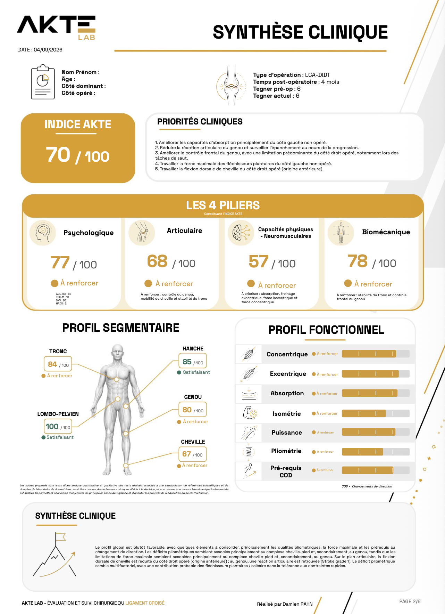

Laboratoire d’analyse du mouvement — Sport · Rééducation · Reprise d’activité
Objectiver le mouvement pour mieux guider la reprise
AKTE Lab analyse la force, la mobilité, les sauts, les asymétries, la biomécanique et les facteurs psychologiques pour mieux comprendre l’état fonctionnel actuel d’un sportif ou d’un patient actif.
Une approche inspirée du sport de haut niveau, accessible aux sportifs amateurs comme professionnels, et intégrée dans un parcours de soins.
Un bilan pour éclairer les décisions dans le parcours de soins
Après une blessure ou une chirurgie, la reprise sportive ne dépend pas seulement du temps écoulé ou de l’absence de douleur. Certaines capacités peuvent rester diminuées : force, mobilité, absorption, contrôle du mouvement, confiance ou capacité à reproduire les exigences du sport.
AKTE Lab intervient comme un point d’étape complémentaire dans le parcours de soins. Le bilan aide à objectiver l’état fonctionnel actuel, à comparer les résultats à des repères pertinents et à identifier les priorités de rééducation ou de préparation physique.
L’objectif n’est pas de remplacer le suivi médical ou kinésithérapique, mais de fournir un support clair, visuel et exploitable pour faciliter les échanges entre le patient, le kinésithérapeute, le médecin, le chirurgien ou le préparateur physique.
Une évaluation multidimensionnelle
Le bilan ne repose pas sur un seul test. Il croise plusieurs sphères d'évaluation pour mieux comprendre comment le corps fonctionne aujourd'hui.
Sphère psychologique
La peur, le stress, l'appréhension, la confiance dans le genou et la perception du risque peuvent influencer la reprise sportive, la performance et la qualité du mouvement. AKTE Lab intègre ces dimensions pour mieux comprendre les freins potentiels au retour à l'activité.
Sphère articulaire
L'évaluation articulaire ne se limite pas à mesurer une amplitude. Elle cherche aussi à comprendre comment l'articulation se comporte lors de tâches fonctionnelles : mobilité, restrictions, asymétries et adaptations du mouvement.
Sphère musculaire & fonctionnelle
Le bilan inclut des tests de force, de saut, d'absorption, de puissance et de contrôle dynamique. Les mesures sont réalisées avec des outils orientés performance, comme des plateformes de force et des dynamomètres.
Sphère biomécanique
AKTE Lab analyse la manière dont chaque segment participe au mouvement : tronc, bassin, hanche, genou, cheville et pied. L'objectif est d'identifier les stratégies de compensation, les asymétries et les zones de vigilance sur des tâches proches des exigences sportives.
Des évaluations utilisées dans la performance,
rendues accessibles à tous
Les évaluations fonctionnelles poussées sont largement utilisées dans le sport de haut niveau pour suivre la progression, guider la reprise et mieux objectiver certaines décisions.
AKTE Lab rend cette approche accessible aux sportifs amateurs comme professionnels grâce à une analyse structurée, des outils spécifiques et un algorithme développé pour croiser les données cliniques, fonctionnelles, biomécaniques et psychologiques.
L'objectif n'est pas de remplacer l'expertise du clinicien, mais de fournir un support clair, visuel et exploitable pour orienter la suite du travail.
Bilan genou — Reconstruction du ligament croisé antérieur
Le bilan actuellement proposé concerne le suivi après reconstruction du ligament croisé antérieur.
Bilan LCA — 6 mois
Évaluation fonctionnelle, musculaire, articulaire, biomécanique et psychologique pour faire le point sur la progression, identifier les priorités de travail et préparer la suite du parcours de reprise.
- Force & asymétries
- Mobilité articulaire
- Tests de sauts & absorption
- Analyse biomécanique
- Facteurs psychologiques
Bientôt disponible
Bilan 3–4 mois
Évaluation orientée reprise de course après reconstruction du ligament croisé antérieur.
Bilan 9 mois
Évaluation orientée retour au sport et retour à la compétition après reconstruction du ligament croisé antérieur.
Cheville & Épaule
Bilans après traumatisme ou chirurgie de cheville, et après chirurgie d'épaule notamment dans le cadre des luxations.
Des priorités concrètes,
pas seulement un score
Le bilan AKTE Lab permet de mettre en évidence des éléments concrets pour orienter la suite du travail.
L'objectif est de mieux comprendre la capacité physique actuelle afin d'adapter progressivement le travail aux exigences de l'activité sportive et de la vie quotidienne.
Un bilan structuré en 4 étapes
Échange initial
Sport pratiqué, historique de blessure, chirurgie, côté opéré, niveau d'activité et objectifs de reprise.
Tests & mesures
Mobilité, force, sauts, tests fonctionnels, absorption, contrôle du mouvement et questionnaires psychologiques.
Analyse croisée
Les résultats sont analysés selon plusieurs dimensions : articulaire, musculaire, fonctionnelle, biomécanique et psychologique.
Rapport & priorités
Un rapport visuel synthétise les résultats et met en évidence les points forts, les points de vigilance et les axes de travail prioritaires.
Un rapport clair pour faciliter les décisions
À l'issue du bilan, un rapport synthétique permet de visualiser les résultats, les scores, les points forts, les points de vigilance et les priorités de travail.
Il peut faciliter les échanges entre le patient, le kinésithérapeute, le préparateur physique, le médecin ou le chirurgien.
Il permet aussi de garder une trace de l'évolution et de comparer les résultats lors d'un bilan ultérieur.
Priorités de travail
Absorption Freinage excentrique Contrôle frontal
Damien RAHN
Kinésithérapeute du sport · Chercheur · Formateur
Damien RAHN est kinésithérapeute du sport, chercheur et formateur dans le domaine de la rééducation, de la performance et du retour au sport.
Son parcours l'amène à accompagner des sportifs amateurs et professionnels, ainsi qu'à intervenir autour de problématiques de reprise après blessure, de suivi fonctionnel et d'analyse du mouvement.
AKTE Lab est né de cette expérience de terrain, de recherche et de formation, avec l'objectif de rendre les évaluations fonctionnelles avancées plus lisibles, plus structurées et plus accessibles.
25 avenue de la porte de Châtillon, 75014 Paris
Tarif
Bilan AKTE Lab — LCA 6 mois
Inclus
- Entretien initial
- Passation des tests
- Mesures de force, mobilité et sauts
- Analyse biomécanique
- Questionnaires psychologiques
- Synthèse des résultats
- Rapport visuel
- Priorités de travail
Le bilan AKTE Lab ne remplace pas un diagnostic médical ni un avis chirurgical. Il constitue un support d'évaluation fonctionnelle et d'aide à la décision.
Questions fréquentes
Vous souhaitez objectiver
votre reprise sportive ?
Réservez un créneau pour réaliser un bilan AKTE Lab et obtenir une synthèse claire de votre état actuel.
Prendre rendez-vous